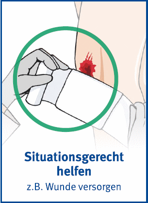
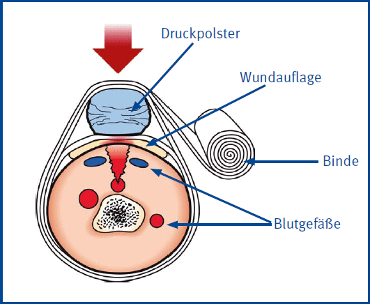
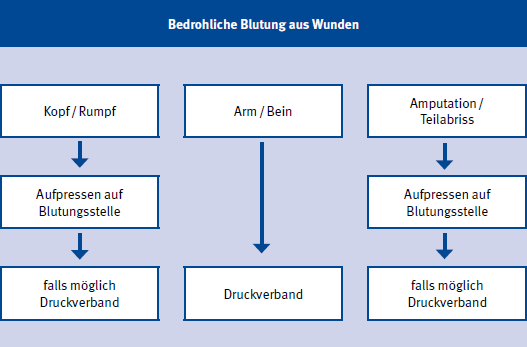

7 Blutungen
Erkennen
- Blutende Wunden können durch Kleidungsstücke oder durch die Lage der verletzten Person verdeckt sein
Maßnahmen
- Einmalhandschuhe tragen
- Wunden keimfrei bedecken
- Gegebenenfalls Schocklagerung
- Gegebenenfalls Anlegen eines Druckverbandes

Anlegen eines Druckverbandes
- Wundauflage auf Wunde legen und mit 2 bis 3 Bindengängen fixieren
- Druckpolster, z.B. zweites Verbandpäckchen, auf Wundauflage platzieren
- Mit weiteren Bindengängen stramm befestigen


Bei Abriss von Körperteilen
- Abgetrennte Körperteile suchen
- In keimfreiem Verbandmaterial verpackt dem Rettungsdienst mitgeben